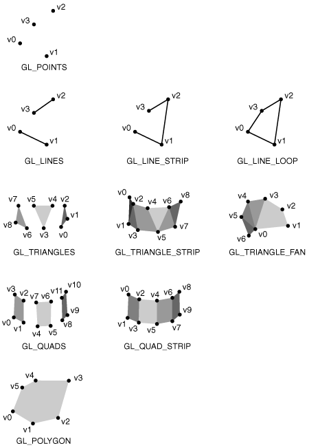

|
KjpsGL
KJPS Graphics Library
|
|
KjpsGL
KJPS Graphics Library
|
KjpsGl nosaukumvieta (namespace) vairāk...
Klases | |
| struct | Color |
| 32 bitu RGBA krāsa vairāk... | |
| struct | Vec2 |
| 2D Vektors vairāk... | |
Funkcijas | |
| void | init (int width=0, int height=0, bool fullscreen=false, int msaa=8) |
| Inicializē bibliotēku un izveido zīmēšanas logu. vairāk... | |
| void | update () |
| Atsvaidzina bibliotēku. vairāk... | |
| void | display () |
| Attēlo uzzīmēto uz ekrāna. vairāk... | |
| void | clearScreen (unsigned char red=0, unsigned char green=0, unsigned char blue=0) |
| Notīra zīmējamo bufferi vienā krāsā. vairāk... | |
| void | setColor (unsigned char red, unsigned char green, unsigned char blue, unsigned char alpha=255) |
| Uzstāda zīmēšanas krāsu. vairāk... | |
| void | drawTriangle (float ax, float ay, float bx, float by, float cx, float cy) |
| Uzzīmē trijstūri ar virsotnēm A,B,C. vairāk... | |
| void | drawRectangle (float left, float bottom, float right, float top) |
| Uzzīmē taisnstūri. vairāk... | |
| void | drawRectangle (float left, float bottom, float right, float top, float uvLeft, float uvBottom, float uvRight, float uvTop) |
| Uzzīmē taisnstūri norādot tekstūras kordinates. vairāk... | |
| void | drawLine (float x1, float y1, float x2, float y2, float w=1, bool caps=false) |
| Zīmē līniju. vairāk... | |
| void | setView (float left, float bottom, float right, float top) |
| Uzstāda zīmēšanas skatu. vairāk... | |
| float | getDeltaTime () |
| Iegūst laiku kādā tika izpildītas darbības starp pēdējiem diviem update() izsaukumiem (ieskaitot pašu update() izsaukuma laiku) vairāk... | |
| void | setVsync (bool enabled) |
| ieslēdz vai izslēdz vsync. vairāk... | |
| void | drawCircle (float x, float y, float r, int segments=64) |
| Uzzīmē apli. vairāk... | |
| void | drawTriangleOutline (float ax, float ay, float bx, float by, float cx, float cy, float w=1) |
| Uzzīmē trijstūra kontūru. vairāk... | |
| void | drawRectangleOutline (float left, float bottom, float right, float top, float w=1) |
| Uzzīmē taisnstūra kontūru. | |
| void | drawCircleOutline (float x, float y, float r, int segments=64, float w=1) |
| Uzzīmē apļa kontūru. vairāk... | |
| void | destroyTexture (int id) |
| Izdzēš iepriekš ielādētu tekstūru. vairāk... | |
| int | getTextureHeight (int id) |
| Iegūst tekstūras id augstumu (pikseļos) vairāk... | |
| int | getTextureWidth (int id) |
| Iegūst tekstūras id platumu (pikseļos) vairāk... | |
| void | setTexture (int id=-1) |
| Uzstāda zīmēšanai tekstūru. vairāk... | |
| bool | getAnyKey () |
| noskaidro vai kāda tastatūras poga tika nospiesta pēdējajā update() vairāk... | |
| bool | getMouseButton (int button=1) |
| Uzzina vai peles poga ir nospiesta. vairāk... | |
| float | getMouseX () |
| Iegūst peles x pozīciju relatīvi loga apakšējajam kreisajam stūrim. vairāk... | |
| float | getMouseY () |
| Iegūst peles y pozīciju relatīvi loga apakšējajam kreisajam stūrim. vairāk... | |
| int | getMouseWheel () |
| Iegūst peles riteņa pagriezienu daudzumu kopš iepriekšējā update() izsaukšanas. vairāk... | |
| int | getWindowHeight () |
| int | randomInRange (int a, int b) |
| Uzģenerē nejauši izvēlētu veselu skaitli intervālā [a;b]. vairāk... | |
| void | sleep (unsigned ms) |
| liek programmai gaidīt noteiktu skaitu milisekunžu ( 1s = 1000ms ) vairāk... | |
| unsigned | getTime () |
| atgriež laiku milisekundēs cik pagājis kopš bibliotēkas inicializācijas vairāk... | |
| template<typename T > | |
| std::string | toString (const T &v) |
| pārvērš mainīgo par tekstu vairāk... | |
| void | setWindowTitle (const std::string &title) |
| nomaina loga virsrakstu vairāk... | |
| int | getWindowWidth () |
| void | drawLine (const std::vector< Vec2 > &points, float w=1, bool caps=true) |
| Zīmē nepārtrauktu lauztu līniju. vairāk... | |
| void | drawArrays (const std::vector< Vec2 > &vertices, unsigned mode=GL_TRIANGLES) |
| Zīmē masīvus (Vertex Arrays) vairāk... | |
| void | drawArrays (const std::vector< Vec2 > &vertices, const std::vector< Color > &colors, unsigned mode=GL_TRIANGLES) |
| void | drawArrays (const std::vector< Vec2 > &vertices, const std::vector< Vec2 > &uv, unsigned mode=GL_TRIANGLES) |
| Zīmē masīvus (Vertex Arrays) vairāk... | |
| void | drawArrays (const std::vector< Vec2 > &vertices, const std::vector< Vec2 > &uv, const std::vector< Color > &colors, unsigned mode=GL_TRIANGLES) |
| Zīmē masīvus (Vertex Arrays) vairāk... | |
| int | loadTexture (const std::string &filename) |
| Ielādē tekstūru. vairāk... | |
| bool | getKey (const std::string &key) |
| Uzzina vai kāds tastatūras taustiņš ir nospiests. vairāk... | |
| long long | getRandom () |
| Uzģenerē nejaušu long long skaitli. vairāk... | |
KjpsGl nosaukumvieta (namespace)
/file kjpsGL.hpp /author Deins Egle
| void kjpsgl::clearScreen | ( | unsigned char | red = 0, |
| unsigned char | green = 0, |
||
| unsigned char | blue = 0 |
||
| ) |
Notīra zīmējamo bufferi vienā krāsā.
| red | notīrāmas krāsas red vērtība [0,255] |
| green | notīrāmas krāsas green vērtība [0,255] |
| blue | notīrāmas krāsas blue vērtība [0,255] |
| void kjpsgl::destroyTexture | ( | int | id | ) |
Izdzēš iepriekš ielādētu tekstūru.
| id | kuru tekstūru izdzēst |
| void kjpsgl::display | ( | ) |
Attēlo uzzīmēto uz ekrāna.
Bibliotēka veic tehniku sauktu par "Double-Buffering". Dobule-Buffering nosaka, ka ir 2 bufferi, 1 no tiem tiek attēlots kamēr otrā notiek zīmēšana. display() samaina šos buferus vietām tādējādi attēlojot līdz šim uzzīmēto. Double buffering ir vajadzīgs lai novērstu dažādus vizuālus artifaktus un neļautu attēlot pusuzzīmētu attēlu. Taču pat ar double buffering iespējama vizuāla nepilnība "Screen tearing", lai to novērstu skatiet setVsync();

| void kjpsgl::drawArrays | ( | const std::vector< Vec2 > & | vertices, |
| unsigned | mode = GL_TRIANGLES |
||
| ) |
Zīmē masīvus (Vertex Arrays)
| vertices | virsotnes |
| mode | zīmēšanas režīms. Pieejamie režīmi: GL_POINTS,GL_LINE_STRIP,GL_LINE_LOOP,GL_TRIANGLES,GL_TRIANGLE_STRIP,GL_TRIANGLE_FAN,GL_QUADS,GL_QUAD_STRIP,GL_POLYGON;

zīmēšanas režīmi |
| void kjpsgl::drawArrays | ( | const std::vector< Vec2 > & | vertices, |
| const std::vector< Color > & | colors, | ||
| unsigned | mode = GL_TRIANGLES |
||
| ) |
Zīmē masīvus (Vertex Arrays)
| vertices | virsotnes |
| colors | virsotņu krāsas |
| mode | zīmēšanas režīms. Pieejamie režīmi: GL_POINTS,GL_LINE_STRIP,GL_LINE_LOOP,GL_TRIANGLES,GL_TRIANGLE_STRIP,GL_TRIANGLE_FAN,GL_QUADS,GL_QUAD_STRIP,GL_POLYGON;
zīmēšanas režīmi |
| void kjpsgl::drawArrays | ( | const std::vector< Vec2 > & | vertices, |
| const std::vector< Vec2 > & | uv, | ||
| unsigned | mode = GL_TRIANGLES |
||
| ) |
Zīmē masīvus (Vertex Arrays)
| vertices | virsotnes |
| uv | virsotņu uv (tekstūras) koordinates |
| mode | zīmēšanas režīms. Pieejamie režīmi: GL_POINTS,GL_LINE_STRIP,GL_LINE_LOOP,GL_TRIANGLES,GL_TRIANGLE_STRIP,GL_TRIANGLE_FAN,GL_QUADS,GL_QUAD_STRIP,GL_POLYGON;
zīmēšanas režīmi |
| void kjpsgl::drawArrays | ( | const std::vector< Vec2 > & | vertices, |
| const std::vector< Vec2 > & | uv, | ||
| const std::vector< Color > & | colors, | ||
| unsigned | mode = GL_TRIANGLES |
||
| ) |
Zīmē masīvus (Vertex Arrays)
| vertices | virsotnes |
| uv | virsotņu uv (tekstūras) koordinates |
| colors | virsotņu krāsas |
| mode | zīmēšanas režīms. Pieejamie režīmi: GL_POINTS,GL_LINE_STRIP,GL_LINE_LOOP,GL_TRIANGLES,GL_TRIANGLE_STRIP,GL_TRIANGLE_FAN,GL_QUADS,GL_QUAD_STRIP,GL_POLYGON;
zīmēšanas režīmi |
| void kjpsgl::drawCircle | ( | float | x, |
| float | y, | ||
| float | r, | ||
| int | segments = 64 |
||
| ) |
Uzzīmē apli.
| x | centra koordinate x |
| y | centra koordinate y |
| r | apļa radius |
| segments | segmentu skaits ko izmantot apļa zīmēšanai |
| void kjpsgl::drawCircleOutline | ( | float | x, |
| float | y, | ||
| float | r, | ||
| int | segments = 64, |
||
| float | w = 1 |
||
| ) |
Uzzīmē apļa kontūru.
| x | centra koordinate x |
| y | centra koordinate y |
| r | apļa radius |
| segments | segmentu skaits ko izmantot apļa zīmēšanai |
| w | kontūras platums(resnums) |
| void kjpsgl::drawLine | ( | const std::vector< Vec2 > & | points, |
| float | w = 1, |
||
| bool | caps = true |
||
| ) |
Zīmē nepārtrauktu lauztu līniju.
| points | līnijas virsotnes |
| w | līnijas platums(resnums) |
| caps | līnijas galu noapaļošana (on/off) |
| void kjpsgl::drawLine | ( | float | x1, |
| float | y1, | ||
| float | x2, | ||
| float | y2, | ||
| float | w = 1, |
||
| bool | caps = false |
||
| ) |
Zīmē līniju.
| x1 | līnijas sākuma pozīcija x |
| y1 | līnijas sākuma pozīcija y |
| x2 | līnijas gala pozīcija x |
| y2 | līnijas gala pozīcija y |
| w | līnijas platums (resnums) |
| caps | līnijas galu noapaļošana (on/off) |
| void kjpsgl::drawRectangle | ( | float | left, |
| float | bottom, | ||
| float | right, | ||
| float | top | ||
| ) |
Uzzīmē taisnstūri.
| left | kreisās malas x kordinate |
| bottom | apakšējās malas y kordinate |
| right | labās malas x kordinate |
| top | augšējās malas y kordinate |
| void kjpsgl::drawRectangle | ( | float | left, |
| float | bottom, | ||
| float | right, | ||
| float | top, | ||
| float | uvLeft, | ||
| float | uvBottom, | ||
| float | uvRight, | ||
| float | uvTop | ||
| ) |
Uzzīmē taisnstūri norādot tekstūras kordinates.
| left | kreisās malas x kordinate |
| bottom | apakšējās malas y kordinate |
| right | labās malas x kordinate |
| top | augšējās malas y kordinate |
| uvLeft | kreisās malas tekstūras x kordinate [0;1] |
| uvBottom | apakšējās malas tekstūras y kordinate [0;1] |
| uvRight | labās malas tekstūras x kordinate [0;1] |
| uvTop | augšējās malas tekstūras y kordinate [0;1] |
| void kjpsgl::drawTriangle | ( | float | ax, |
| float | ay, | ||
| float | bx, | ||
| float | by, | ||
| float | cx, | ||
| float | cy | ||
| ) |
Uzzīmē trijstūri ar virsotnēm A,B,C.
| ax | A x koordinate |
| ay | A y koordinate |
| bx | B x koordinate |
| by | B y koordinate |
| cx | C x koordinate |
| cy | C y koordinate |
| void kjpsgl::drawTriangleOutline | ( | float | ax, |
| float | ay, | ||
| float | bx, | ||
| float | by, | ||
| float | cx, | ||
| float | cy, | ||
| float | w = 1 |
||
| ) |
Uzzīmē trijstūra kontūru.
| ax | A x koordinate |
| ay | A y koordinate |
| bx | B x koordinate |
| by | B y koordinate |
| cx | C x koordinate |
| cy | C y koordinate |
| w | kontūras platums(resnums) |
| bool kjpsgl::getAnyKey | ( | ) |
noskaidro vai kāda tastatūras poga tika nospiesta pēdējajā update()
| float kjpsgl::getDeltaTime | ( | ) |
Iegūst laiku kādā tika izpildītas darbības starp pēdējiem diviem update() izsaukumiem (ieskaitot pašu update() izsaukuma laiku)
Šī informācija ir noderīga lai varētu veikt animācijas pareizā ātrumā neatkarīgi no tā cik daudz kadru sekundē dators spējīgs attēlot. Piemēram, kustinot bumbu 1px katrā kadrā, bumba tiks pakustināta par 1000px ja dators spēj apstrādāt 1000 kadrus sekundē. Taču tikai 100px ja dators ir lēns un spēj apstrādāt tikai 100 kadrus. Šo problēmu var vienkārši atrisināt. Ja vēlamies kustināt bumbu 100px sekundē tad 100 kadros sekundē kustinam bumbu katrā kadrā par 1px, ja dators strādā 50 kadros sekundē bumbu katrā kadrā pakustinam pa 2px. To vienkārši varam implementēt šādi bumbasPozīcija += ātrums * getDeltaTime(); Tādējādi mēs pielāgojamies datora ātrdarbībai. (tas strādā tikai tad ja update izsauc 1reiz kadrā)
| bool kjpsgl::getKey | ( | const std::string & | key | ) |
Uzzina vai kāds tastatūras taustiņš ir nospiests.
| key | taustiņa nosaukums |
ja taustiņa nosaukums netiek identificēts tiek veikta brīdinājuma izdruka konsolē (std::cerr)
Pieejamie taustiņu nosaukumi:
| bool kjpsgl::getMouseButton | ( | int | button = 1 | ) |
Uzzina vai peles poga ir nospiesta.
| button | peles pogas identifikators (1 - kreisā, 2 - vidējā, 3 - labā) |
| int kjpsgl::getMouseWheel | ( | ) |
Iegūst peles riteņa pagriezienu daudzumu kopš iepriekšējā update() izsaukšanas.
| float kjpsgl::getMouseX | ( | ) |
Iegūst peles x pozīciju relatīvi loga apakšējajam kreisajam stūrim.
| float kjpsgl::getMouseY | ( | ) |
Iegūst peles y pozīciju relatīvi loga apakšējajam kreisajam stūrim.
| long long kjpsgl::getRandom | ( | ) |
Uzģenerē nejaušu long long skaitli.
| int kjpsgl::getTextureHeight | ( | int | id | ) |
Iegūst tekstūras id augstumu (pikseļos)
| id | tekstūrai |
| int kjpsgl::getTextureWidth | ( | int | id | ) |
Iegūst tekstūras id platumu (pikseļos)
| id | tekstūrai |
| unsigned kjpsgl::getTime | ( | ) |
atgriež laiku milisekundēs cik pagājis kopš bibliotēkas inicializācijas
| int kjpsgl::getWindowHeight | ( | ) |
| int kjpsgl::getWindowWidth | ( | ) |
| void kjpsgl::init | ( | int | width = 0, |
| int | height = 0, |
||
| bool | fullscreen = false, |
||
| int | msaa = 8 |
||
| ) |
Inicializē bibliotēku un izveido zīmēšanas logu.
| width | loga platums vai fullscreen režīmā x izšķirtspēja (0 ja vēlas logu atvērt pa visu ekrānu vai fullscreen režīmā izmantot noklusēto monitora izšķirtspēju) |
| height | loga augstums vai fullscreen režīmā y izšķirtspēja (0 ja vēlas logu atvērt pa visu ekrānu vai fullscreen režīmā izmantot noklusēto monitora izšķirtspēju) |
| fullscreen | vai logu atvērt fullscreen režīmā (true=fullscreen;false=windowed) |
| msaa | MSAA anti aliasing kvalitāte. Atļautās vērtības (ja atbalsta video karte) ir 0 (izslēgts), 2, 4, 8, 16 vai 32 
Kā izskatās anti aliasing |
| int kjpsgl::loadTexture | ( | const std::string & | filename | ) |
Ielādē tekstūru.
Ielādē attēlu no faila un nosūta to video kartei kā tekstūru.
| filename | attēla faila nosaukums(ceļš uz failu). |
| int kjpsgl::randomInRange | ( | int | a, |
| int | b | ||
| ) |
Uzģenerē nejauši izvēlētu veselu skaitli intervālā [a;b].
| a | galējā robeža |
| b | galējā robeža |
| void kjpsgl::setColor | ( | unsigned char | red, |
| unsigned char | green, | ||
| unsigned char | blue, | ||
| unsigned char | alpha = 255 |
||
| ) |
Uzstāda zīmēšanas krāsu.
| red | krāsas red vērtība [0,255] |
| green | krāsas green vērtība [0,255] |
| blue | krāsas blue vērtība [0,255] |
| alpha | caurspīdība [0(pilnīgi caurspīdīgs), 255(pilnīgi necaurspīdīgs)] |
| void kjpsgl::setTexture | ( | int | id = -1 | ) |
Uzstāda zīmēšanai tekstūru.
| id | kuru tekstūru izmantot zīmēšanai, vai -1 lai neizmantotu nekādu tekstūru zīmēšanai |
| void kjpsgl::setView | ( | float | left, |
| float | bottom, | ||
| float | right, | ||
| float | top | ||
| ) |
Uzstāda zīmēšanas skatu.
| left | skata labā mala (x1 kordinate) |
| bottom | skata apakšējā mala (y1 kordinate) |
| right | skata labā mala (x2 kordinate) |
| top | skata augšējā mala (y2 kordinate) |
| void kjpsgl::setVsync | ( | bool | enabled | ) |
ieslēdz vai izslēdz vsync.
| enabled | true lai ieslēgtu, false lai izslēgtu |
Vsync atrisina vizuālu problēmu sauktu par "Screen tearing". Tas notiek tad, ja buferi tiek samainīti laikā kad monitors ir atsvaidzināšanas processā. Vsync sinhronizē buferu apmaiņu ar monitora atsvaidzes intensitāti (refresh rate).
| void kjpsgl::setWindowTitle | ( | const std::string & | title | ) |
nomaina loga virsrakstu
| title | loga jaunais virsraksts |
| void kjpsgl::sleep | ( | unsigned | ms | ) |
liek programmai gaidīt noteiktu skaitu milisekunžu ( 1s = 1000ms )
| ms | milisekundes cik programmai gaidīt |
| std::string kjpsgl::toString | ( | const T & | v | ) |
pārvērš mainīgo par tekstu
| v | mainīgais kura vērtību pārērst par tekstu |
| void kjpsgl::update | ( | ) |
Atsvaidzina bibliotēku.
Atsvaidzinot bibliotēku tā saņem visus loga notikumus un citus operētējsistēmas ziņojumus, iegūst svaigu informāciju par tastatūru, peli u.c. ievad ierīcēm. Šo funkciju jāizsauc regulāri, citādi operētējsistēma var paziņot ka programma ir "not responding", jo no tās netiek nolasīti ziņojumi. Parasti šo funkciju izsauc vienreiz katrā kadrā.
 1.8.8
1.8.8